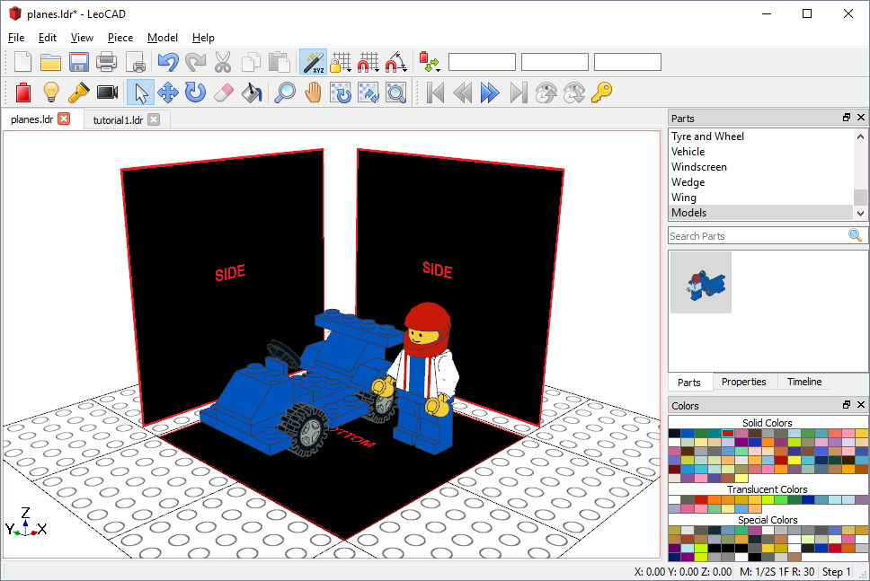

Texture Mapping
LeoCAD supports texture mapped primitives through the LDraw TEXMAP extension.
Example
One of the uses for texture mapping could be to use photos or images as reference images to your model while building it.

The planes in the image above are drawn using PNG files as textures using the following code in the file:
0 !TEXMAP START PLANAR 100 10 100 100 10 -100 -100 10 100 bottom.png
4 16 100 1 -100 100 1 100 -100 1 100 -100 1 -100
0 !TEXMAP END
0 !TEXMAP START PLANAR -100 -200 10 100 -200 10 -100 0 10 side.png
4 16 100 -200 120 100 0 120 -100 0 120 -100 -200 120
0 !TEXMAP END
0 !TEXMAP START PLANAR 0 -200 100 0 -200 -100 0 0 100 side.png
4 16 120 -200 100 120 0 100 120 0 -100 120 -200 -100
0 !TEXMAP END